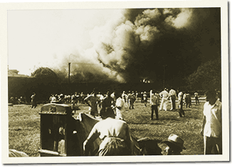

|
j
a v a s c r i p t |
December 29, 1941
We weren’t bombed today though we were twice sirened. Only three were injured in yesterday’s bombing as the area had been evacuated. The targets and affected areas were the same, though the destruction was greater. Fire completely destroyed Vicente Madrigal’s DMHM newspaper plant [El Debate, Monday Post, Herald and Mabuhay].

DMHM Plant Burns
Early to the office to respond to Pierce’s cable suggesting we enter open liquidation orders on all positions. Mindful of our fate, they signed-off with an uncharacteristic “Cheerio.” Well, the accounts are in order and will be fine; the account holders ... I’m not so sure. My brother Joe showed up after supper, but our joy was shortlived. He ran upstairs saying he needed to “wash and be gone.” He was sent “ahead of the pack” to Bataan with some confidential message. “We’ll be fighting as a single army anytime now,” he said. On his way out he grabbed some leftovers from the table. At the gate, he turned and said, “Take care of Mom and Dad, and be discreet.” I asked, “How long?” He gestured. I knew it would be a long time before I’d see him again. We exchanged sharp salutes and off he went. Last night, KGEI quoted an official communication: “No change in the north and none at Atimonan.” The truth is, the Japanese are at Tiaong — well past Atimonan and the bottlenecks. Parker is already in Bataan preparing defensive positions. Parts of his Southern Luzon force passed through Manila tonight on their way there. The Filipinos’ blind faith in Uncle Sam keeps the most incredible of rumors alive. A sampling: 200 Airacobras have landed; we’re chasing the Japanese army all over the place; Aussie troops en route to Hongkong were diverted in time and are filtering into the country; the USS Saratoga is about to arrive with a convoy of 100 vessels! Roosevelt made a speech today that moved the heart of every Filipino: The people of the U.S. will never forget what people of the Philippines are doing this day and will do in the days to come. I give to the people of the Philippines my solemn pledge that their freedom will be redeemed and their independence established and protected. The entire resources in men and material of the U.S. stand behind that pledge. “Positive aid is on the way,” said Sayre, suggesting the outlook was bright. Then he contradicted himself by mentioning the word “occupation.” So smoothly did it slip-by that many missed its tragic implication. |
|
|
|
|